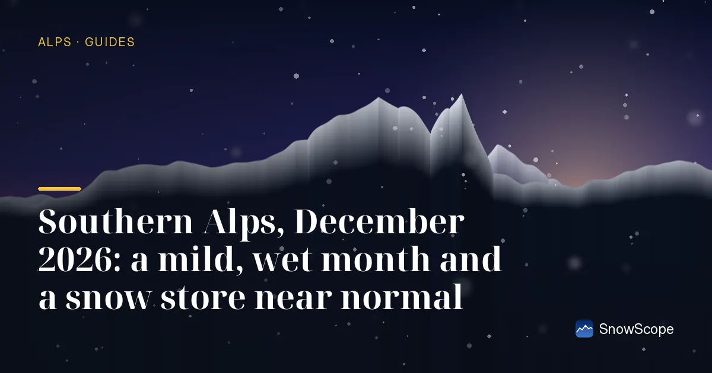
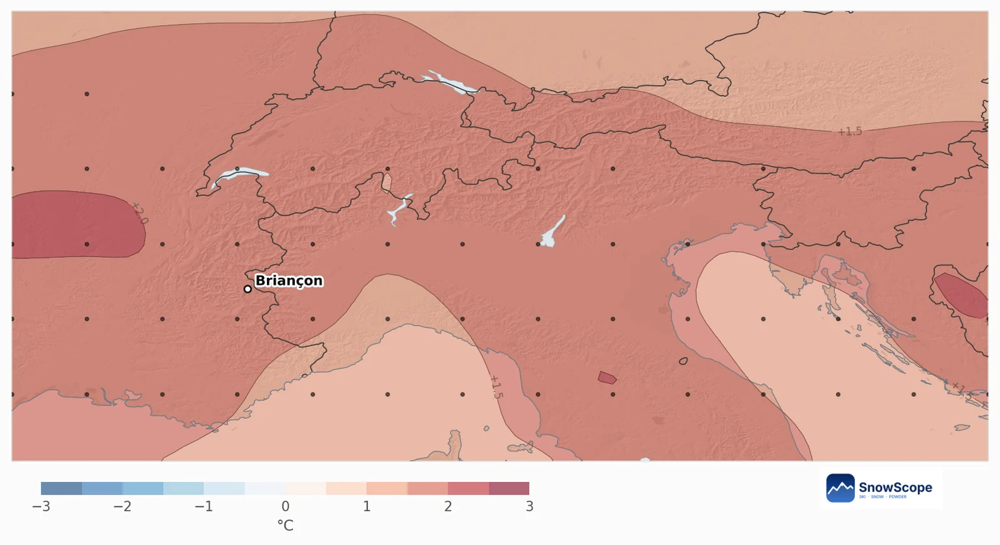
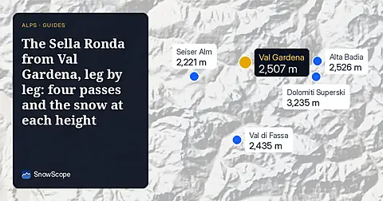

Southern Alps, December 2026: a mild, wet month and a snow store near normal
December snow is water stored in the mountains for spring melt. The Southern Alps face a warmer, wetter month ahead, yet the snow depth on 31 December is forecast to stay near its usual level. Most of the range shows no clear pattern; only the French western edge tilts drier.
See the live snow forecast for Southern Alps in the SnowScope appSnow depth, powder alerts and the 3D map, free.

No signal across most of the range
When we compare each 10 km patch of mountain to its own past 45 Decembers, four in five areas—from Briançon through to Sestriere and down towards Cuneo—show no tilt either way. The western fringe near Grenoble and the French valleys beyond tilts drier, but nowhere tilts snowier.
The chance of a wetter December than usual spans from 31 % to 55 % across the region, with a median of 45 %. This scatter reflects the complexity of the Southern Alps: a few valleys can catch extra snow while others stay lean.
Warmth drives the forecast; rain falls lower
The European weather centre's 51 forecasts are nearly unanimous on one point: 88 % of them predict December 1.7 °C warmer than the usual mean. That warmth is the most reliable part of this outlook. Precipitation rises too—14 % above the normal 101 mm—and 61 % of the runs are wetter than average.
For snow storage, the trade-off matters. Warm air and moist Mediterranean flow mean that high peaks catch snow while lower slopes and passes see rain. Snow depth relies on this balance. The result: depths at year-end stay close to what past Decembers have left.


French side: 61 cm by 31 December
The French Southern Alps (Serre-Chevalier, Vars and Risoul, Orcières, Valberg, Dévoluy) sees a December with 1.5 °C above normal and precipitation 8 % higher than usual. The outlook for new snow is 44 cm, slightly below the typical 48 cm that the past 45 years have brought.
On 31 December, the forecast depth is 61 cm. That matches the usual 62 cm almost exactly. Three past Decembers—2023, 2022 and 2018—match this forecast's pattern most closely. The range of likely depths spans from 49 cm to 85 cm, so plan for typical early-season conditions.
Italian side: stable at 64 cm
Across the border in the Aosta Valley and Piedmont (Courmayeur, Sestriere, Monterosa, Pila), December will be 1.4 °C warmer than normal, with precipitation 7 % above the past average. The outlook holds new snow at 43 cm, the same as a typical December.
On 31 December, depths are forecast at 64 cm, again matching the 45-year normal. Half the forecast members show deeper snow than usual, half shallower. The closest analogs are again 2023, 2018 and 2022. Skiers on the Italian side should expect mid-range conditions rather than extremes.
What this outlook means for your trip
An outlook near normal is reassuring but uninspiring. It says: book your December trip without fear of a snow shortage, but do not expect a banner month. The warmth forecast is the signal we trust most, so aim for high-altitude slopes and north-facing terrain in early December, where cold air lingers.
An outlook like this cannot predict single storms. When a Mediterranean low appears in the 7-day forecast, the Southern Alps can store substantial snow in one or two days. Early December is typically calmer; watch for storms from mid-month onwards. Compare individual resorts on the SnowScope map—snow depth varies sharply from valley to valley.
Tips for skiers
- Target the highest lifts and north-facing slopes in early December, when the air is coldest and rain is least likely at altitude.
- Check the 7-day forecast weekly for Mediterranean depressions: they deliver most of the December snow to this region in short bursts.
- Browse the SnowScope map before booking to see which valley holds more snow; the difference between neighbour resorts can be 20–30 cm.
- If fresh snow arrives, aim for upper slopes within hours; warmer days can soften or melt early-season cover quickly.
- Pack layers and a rain jacket: December brings as much water as snow, and the boundary between the two shifts with altitude and time of day.
About these numbers
Resort snow depths are the deepest snow on the resort's upper slopes on the date shown; they are estimates for an area, not a measurement at one point. Forecasts can change. Always read the official avalanche bulletin before going off-piste.
Cite this report
For research, teaching or the press: the numbers and charts are free to reuse under CC BY 4.0 with this citation.
SnowScope (2026), Southern Alps, December 2026: a mild, wet month and a snow store near normal, https://snowscope.app/blog/en/2026/11/southern-alps-december-2026-snow-outlook.html, accessed 2026-11-10
SnowScope (Atlas Labs). (2026, November 10). Southern Alps, December 2026: a mild, wet month and a snow store near normal. SnowScope snow reports. https://snowscope.app/blog/en/2026/11/southern-alps-december-2026-snow-outlook.html
BibTeX
@misc{snowscope2026southernalpsdecember2026,
author = {{SnowScope (Atlas Labs)}},
title = {Southern Alps, December 2026: a mild, wet month and a snow store near normal},
year = {2026},
month = nov,
howpublished = {\url{https://snowscope.app/blog/en/2026/11/southern-alps-december-2026-snow-outlook.html}},
note = {Published 2026-11-10 09:31 UTC; accessed 2026-11-10}
}· CC BY 4.0 · Methods, data and tools →
Follow Southern Alps
Free: a message when fresh snow is coming, and the forecast every morning.
More snow reports

Is Verbier good for beginners? When is the snow best? How do you get there? Answers from the 4 Vallées and 46 past winters of snow data.

A walk-through of the Sella Ronda from Sëlva in Val Gardena: Gardena, Campolongo, Pordoi and Sella passes in order, with our snow history of 46 past winters.

Chantarella, Marguns, Piz Nair, White Turf: the words you hear in St. Moritz, explained, and what 46 past winters of our snow history say about each height of Corviglia.